GenericFluxTubeFlux tube with fixed cross-section and length; linear or non-linear material characteristics |

|
Information
This information is part of the Modelica Standard Library maintained by the Modelica Association.
The generic flux tube models the reluctance with constant
area of cross section, and length, l
the magnetic reluctance by:
-
 ,
,

Parameters (3)
| mu_rConst |
Value: 1 Type: RelativePermeability Description: Constant relative permeability |
|---|---|
| l |
Value: 0.01 Type: Length (m) Description: Length in direction of flux |
| area |
Value: 0.0001 Type: CrossSection (m²) Description: Area of cross section |
Connectors (2)
| port_p |
Type: PositiveMagneticPort Description: Positive quasi-static magnetic port |
|
|---|---|---|
| port_n |
Type: NegativeMagneticPort Description: Negative quasi-static magnetic port |
Components (4)
| V_m |
Type: ComplexMagneticPotentialDifference Description: Magnetic potential difference of both ports |
|
|---|---|---|
| Phi |
Type: ComplexMagneticFlux Description: Magnetic flux from port_p to port_n |
|
| B |
Type: ComplexMagneticFluxDensity Description: Magnetic flux density (normal component) |
|
| H |
Type: ComplexMagneticFieldStrength Description: Magnetic field strength (normal component) |
Used in Examples (2)
|
Modelica.Magnetic.QuasiStatic.FluxTubes.Examples
Linear inductor with ferromagnetic core |
|
|
Modelica.Magnetic.QuasiStatic.FluxTubes.Examples
Non linear inductor with ferromagnetic core |